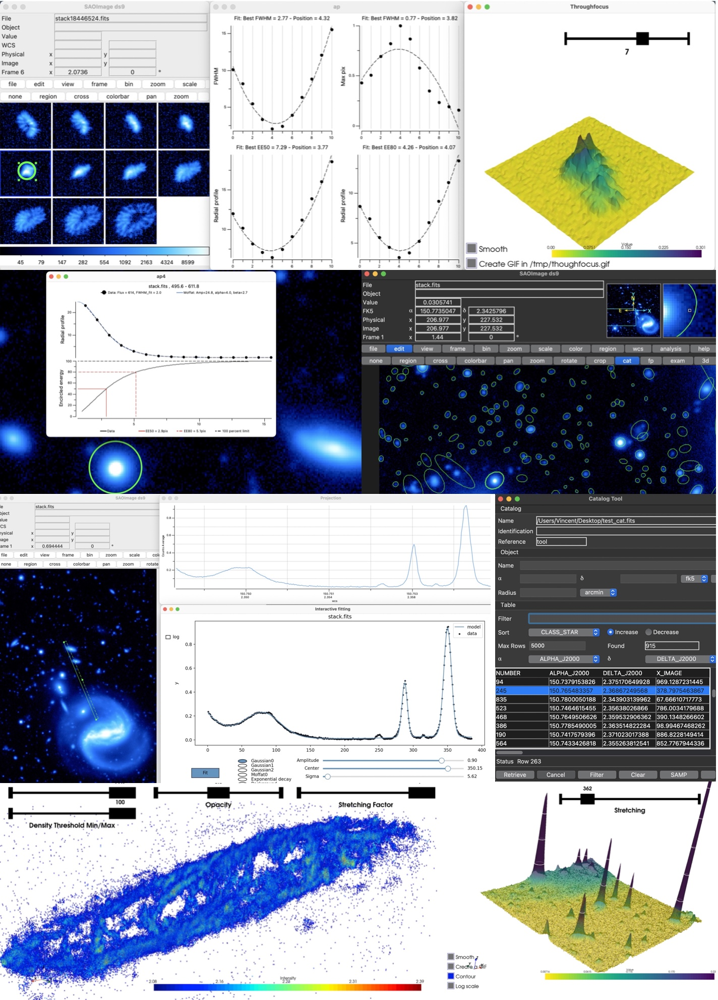

pyDS9plugin is the first open source pythonic SAOImageDS9 quick look plugin. It can be found on GitHub. Its goal is three-fold:
- Pushing the DS9 visualization application a step further by combining it to image processing tools
- Boosting the way we interact with scientific images in a quantitative way
- catalyze community collaboration and code enhancement by providing a first extensive package gathering a glimpse of all the possibilities that offers DS9 extensibility
Table of content
User Guide
About
